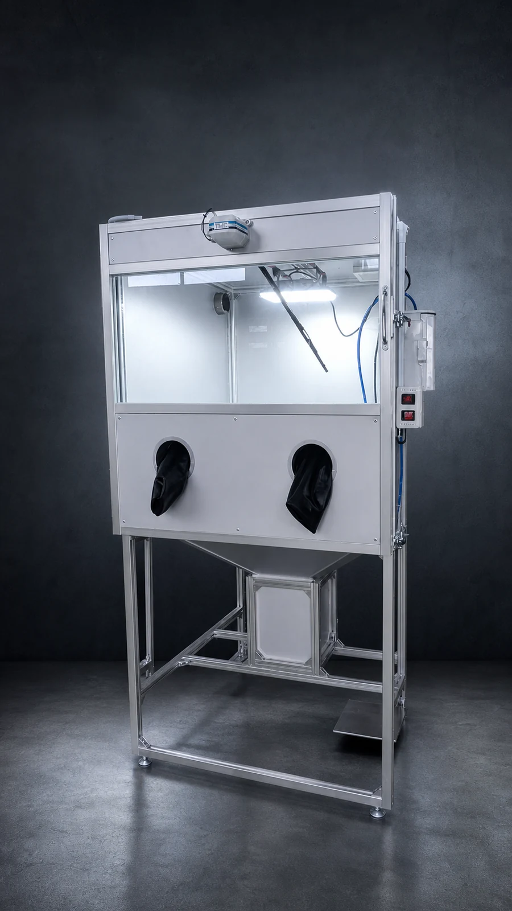
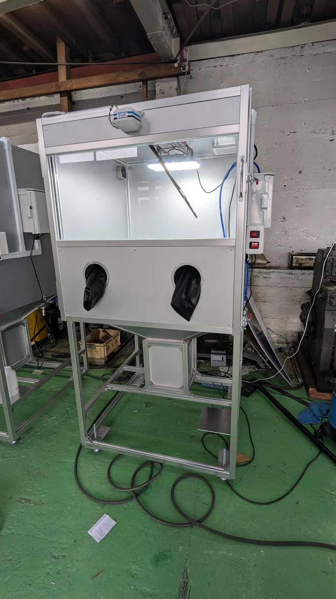
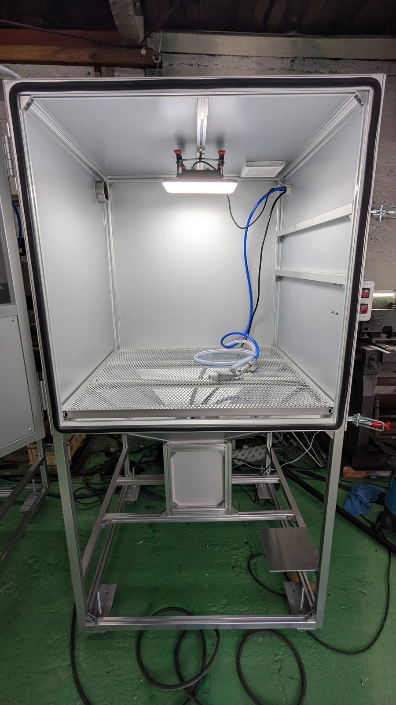
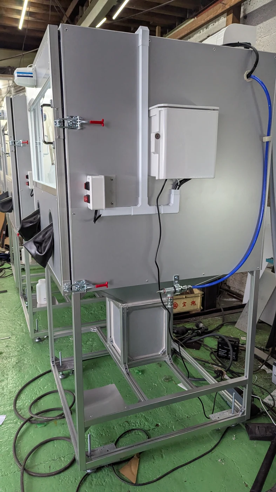

01 / LARGE CAPACITY
ホイールが収まる大型キャビネット
ホイールや大型エンジンなど、小型のウェットブラストマシンでは扱いにくいワークに対応します。適合は対象物の寸法・重量を事前に確認します。
LARGE WET BLAST MACHINE / 実機デモ受付中
レストア、エンジン整備、ホイール補修、機械部品の洗浄・表面処理へ。小型機では収まりにくいワークを扱える、受注生産のキャビネット式ウェットブラストマシンです。
正式注文前に、対象ワーク、搬入経路、設置場所、コンプレッサー条件を確認します。

WHAT IS WET BLASTING
水・研磨材・圧縮空気を使い、部品の洗浄と表面処理を行う湿式ブラスト設備です。乾式のサンドブラストとは粉塵、仕上がり、研削力、後処理が異なるため、母材と目的に合う方式を選ぶ必要があります。
ホイールや大型エンジンなど、小型のウェットブラストマシンでは扱いにくいワークに対応します。適合は対象物の寸法・重量を事前に確認します。

のぞき窓の水滴やミストを拭き取りながら、ワークの状態を確認できます。実機デモでは視認性と操作方法を確かめられます。
PRICE / SPECIFICATION
REAL MACHINE / REAL SCALE
生成イメージではなく実機写真を掲載しています。来訪デモ、オンライン実演、テスト加工についてご相談いただけます。


FAQ
価格、コンプレッサー、大型ワーク、デモについて、導入前によくいただく質問をまとめました。
販売価格は898,000円です。税区分、送料、搬入・設置、研磨材、コンプレッサー、オプション等は正式見積に明記します。
本体電源はAC100Vですが、噴射には別途圧縮空気が必要です。推奨コンプレッサーは5.5kWです。100V機や200V・2.2kW機では噴射力・処理速度が低下します。
ホイールの収容実績があります。ワークごとに寸法・重量が異なるため、写真・寸法・重量または現物で適合を確認します。
ウェットブラストは水と研磨材を使う湿式の表面処理です。乾式のサンドブラストとは粉塵、仕上がり、研削力、後処理が異なるため、落としたい汚れや塗膜、母材から方式を選びます。
ワークの収まり、操作方法、電動ワイパーの動作、コンプレッサー条件を確認できます。テスト加工をご希望の場合は対象物と希望仕上がりを事前に伺います。
受注枠と仕様を確認後、納期、保証範囲、消耗品、交換部品、支払条件を正式見積に明記します。
DEMO / FIT CHECK
写真と寸法からの適合確認、来訪デモ、オンライン実演をご相談いただけます。